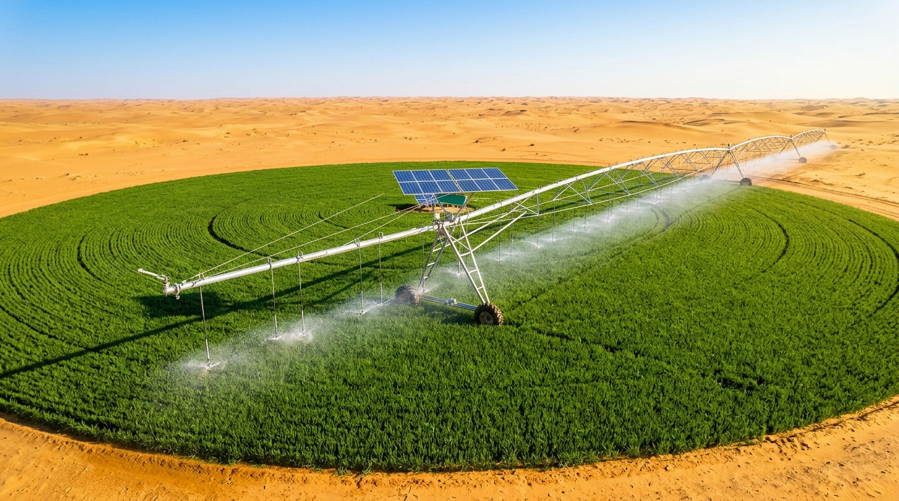

نمنح محاور الري الصحراوية عقلاً صناعياً ذكياً يوفر حتى 35% من المياه والطاقة
مشروع Smart Desert Pivot (SDP) الحاصل على وسم لابل للمشاريع المبتكرة يقدم حلاً هندسياً لتحويل محاور الرش القائمة إلى أنظمة ذكية تعمل بالطاقة الشمسية وحساسات التربة وتدفق المياه وشبكة LoRaWAN. استكشف فكرتنا، إحصائياتنا، ونموذجنا الأولي الفعلي والتفاعلي.

ماذا تريد أن تستكشف في مشروع Smart Desert Pivot؟
صممنا المنصة في 4 محاور استعراضية رئيسية؛ كل محور ينقلك مباشرة إلى التجربة أو الوثيقة الهندسية التي تبحث عنها دون تشتيت:
المحاكي التفاعلي الحي وحاسبة الجدوى (ROI)
جرب بنفسك كيف يتخذ النظام قرارات الري والإيقاف الآلي في 6 سيناريوهات مناخية صحراوية، واحسب التوفير السنوي بالدينار والسنتيم.
المجسم الميكانيكي الفعلي بالألومنيوم وتصميم 3D CAD
شاهد الصور الحقيقية والقياسات الهندسية الدقيقة (420mm × 250mm × 150mm) للنموذج الميكانيكي المصنع ومخطط بنية إنترنت الأشياء.
صندوق الترقية SDP ومكتبة الحساسات الميدانية
اكتشف المكونات الفعلية للمشروع بما فيها حساس تدفق المياه (YF-S201C 1-30L/min)، الألواح الشمسية، ومجسات التربة والرياح.
شراكات مصنعي البيفو، وسم لابل، والتواصل المباشر
اطلع على وثيقة علامة مشروع مبتكر، عروض الشراكة لمصنعي الهياكل، وتواصل مباشرة مع المؤسس م. لشهب جعفر بورقلة.
لماذا يمثل هذا المشروع فرصة استثمارية وزراعية استراتيجية في الجزائر؟
تعتمد الفلاحة الاستراتيجية في الجنوب الجزائري على خزانات المياه الجوفية العميقة. توضح المؤشرات الرسمية حجم السوق والوفر المحقق:
مساحات الأوعية العقارية الموجهة للزراعات الاستراتيجية (القمح، الذرة، الأعلاف) عبر الجنوب الجزائري والتي تعتمد كلياً على الري المحوري.
نسبة الفاقد المائي في المحاور التقليدية عند التشغيل وقت الظهيرة أو أثناء هبوب الرياح الرملية دون وجود قواطع أمان ذكية.
تؤكد أبحاث منظمة الفاو (FAO) أن ربط السقي بحساسات رطوبة التربة وتدفق المياه ومعادلة البخر-نتح يقلص الضخ بنسبة 25% إلى 40%.
فترة استرداد تكلفة صندوق الترقية المتوقعة بفضل التوفير المباشر في فواتير الكهرباء والمازوت وحماية مضخات الآبار.
مشروع مبتكر جاهز للشراكة الصناعية والتطبيق الميداني الأول
نحن في مرحلة ما قبل التسويق التجاري بعد إتمام بناء النموذج الأولي المخبري والميكانيكي والحصول على وسم لابل (Label Projet Innovant). نرحب بالمستثمرين، مصنعي المحاور، والفلاحين الكبار لبناء أول خط إنتاج وتجريب حقلي موسع في الجنوب الجزائري.